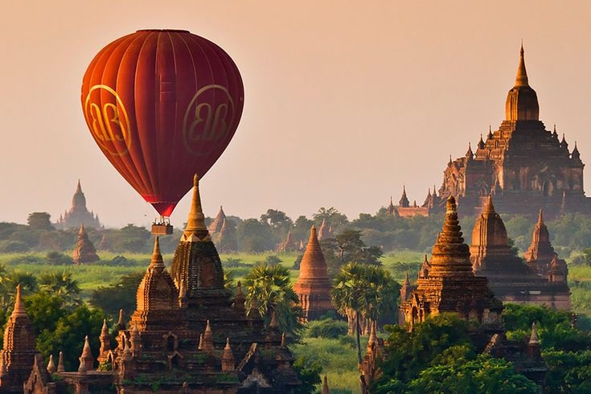
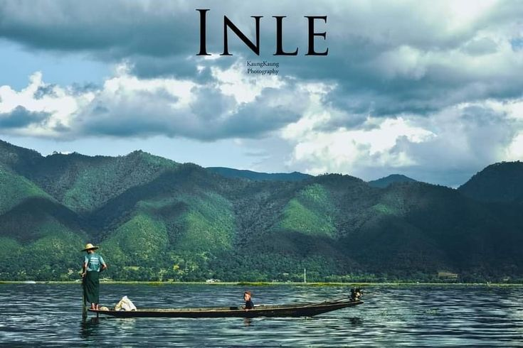

Ngwe Saung Beach
Ngwesaung (Burmese: ငွေဆောင်), also spelt Ngwe Hsaung, is a beach resort located 48 km west of Pathein, Ayeyarwady Region, Myanmar. It is the namesake of Ngwesaung Subtownship, Pathein Township. In 2014, the town of Ngwesaung had 10,732 people.The beach is a minimum of five hours drive away from the principal city of Yangon, and an airport is in the works. Buses leave at 6am & 9:30pm from in front of the Yangon Central Railway Station. Opened in March 2000,Ngwe Hsaung is newer than nearby and more popular Chaung Thar Beach, and is designed to attract people with larger holiday budgets.An unspoilt 15 kilometres (9.3 mi) stretch of silvery sand and modern amenities have made Ngwe Hsaung a popular destination for less budget conscious tourists from Lower Myanmar. Still Ngwe Hsaung has much to develop. Its choices for nightlife activities remain paltry, even by local standards. Chaung Thar and Ngapali beaches have greater choices of nighttime activities. At this point, a nearby elephant training camp is a main daytime attraction at Ngwe Hsaung. The Calventuras Islands are a group of islets lying about 9 km to the west of Broken Point.

Bagan
Bagan ( Burmese: ပုဂံ; formerly Pagan) is a medieval city and a UNESCO World Heritage Site in the Mandalay Region of Myanmar.From the 9th to 13th centuries, the city was the capital of the Pagan Kingdom, the first kingdom that unified the regions that would later constitute Myanmar. During the kingdom's height between the 11th and 13th centuries, more than 10,000 Buddhist temples, pagodas and monasteries were constructed in the Bagan plains alone,of which the remains of over 2,300 temples and pagodas survive.Bagan survived into the 15th century as a human settlement, and as a pilgrimage destination throughout the imperial period. A smaller number of "new and impressive" religious monuments still went up to the mid-15th century, but afterward, new temple constructions slowed to a trickle, with fewer than 200 temples built between the 15th and 20th centuries.The old capital remained a pilgrimage destination, but pilgrimage was focused only on "a score or so" most prominent temples out of the thousands, such as the Ananda, the Shwezigon, the Sulamani, the Htilominlo, the Dhammayazika, and a few other temples along an ancient road. The rest—thousands of less famous, out-of-the-way temples—fell into disrepair, and most did not survive the test of time. For the few dozen temples that were regularly patronized, the continued patronage meant regular upkeep as well as architectural additions donated by the devotees. Many temples were repainted with new frescoes on top of their original Pagan era ones, or fitted with new Buddha statues. Then came a series of state-sponsored "systematic" renovations in the Konbaung period (1752–1885), which by and large were not true to the original designs—some finished with "a rude plastered surface, scratched without taste, art or result". The interiors of some temples were also whitewashed, such as the Thatbyinnyu and the Ananda. Many painted inscriptions and even murals were added in this period. The Bagan Archaeological Zone is a main attraction for the country's nascent tourism industry.

Inlay
Inle Lake (Burmese: အင်းလေးကန်) is a freshwater lake located in the Nyaungshwe Township of Shan State, part of Shan Hills in Myanmar (Burma). It is the second largest lake in Myanmar, with an estimated surface area of 44.9 square miles (116 km2), and one of the country's highest, at an elevation of 2,900 feet (880 m). During the dry season, the average water depth is 7 feet (2.1 m), with the deepest point being 12 feet (3.7 m). During the rainy season, this can increase by 5 feet (1.5 m). The watershed area for the lake lies to a large extent to the north and west of the lake. The lake drains through the Nam Pilu or Balu Chaung on its southern end. There is also a hot spring on its northwestern shore. Large sections of the lake are covered by floating plants. Its clear and slightly alkaline waters (pH 7.8–8) are home to a diverse fauna and many species found nowhere else in the world (endemics).There are more than 35 native species of fish, including 17 endemics. Some of these, notably the Sawbwa barb, red dwarf rasbora, emerald dwarf rasbora, Lake Inle danio, Inle loach and the Inle snakehead, are of minor commercial importance for the aquarium trade. Several fish that are not native have been introduced.Additionally, the lake is home to about 45 species of freshwater snails, 30 of them endemic,along with a small endemic freshwater crab, Inlethelphusa acanthica.It hosts approximately 20,000 migratory gulls from November to January.